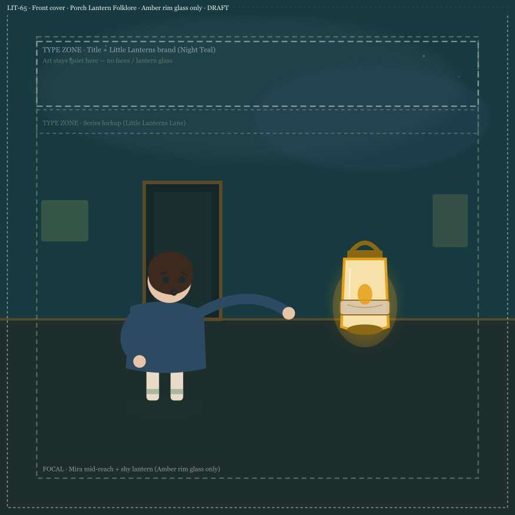

Debut title · Book 1
The Softest Glow
Mira’s night-lantern won’t blaze like the others — only a shy circle of light. A gentle story about quiet courage, belonging, and the soft truth that soft is still light.
Made for the read-aloud years
Little Lanterns is for children roughly ages 6–8 — old enough to lean into a story, young enough to still want a lap and a lantern-lit page. We write for the child in the room and the caregiver holding the book.
For the grown-ups reading along
Short pacing tips, pause points, and gentle questions — so bedtime can stay calm even when the story goes soft and quiet.